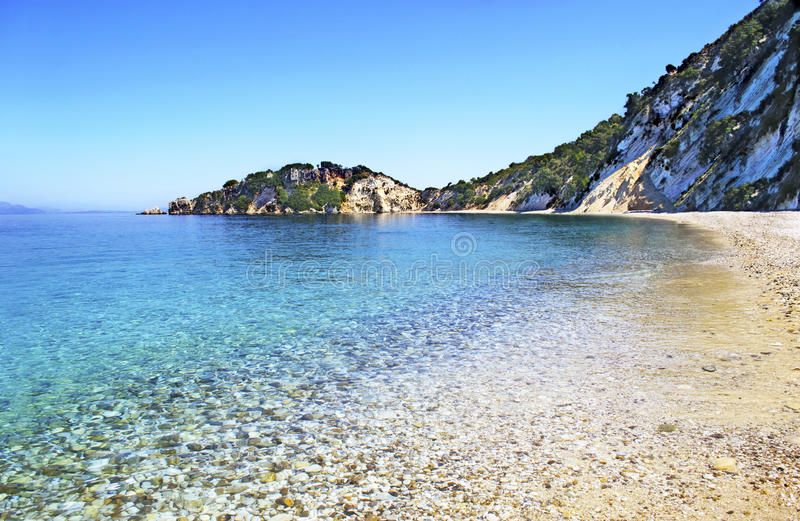

terenceithaque

Gidaki est une plage par laquelle on accède en bateau par le port de Vathy ou alors par des santiers, pour les randonneurs, où la marche est très fatiguante.
Cette plage est un paradis grâçe à ses eaux cristallines et placides couplées à un environnement estival à couper le souffle.
Suite par là
En savoir plus sur Gidaki sur Greeka (site en Anglais).
Vous cherchez le contenu d'une plage en particulier? Cliquez ici pour accéder à l'index des plages.
Vous n'êtes pas sur la page que vous cherchez? Dirigez vous vers l'index.
Vous vous posez des questions sur le contenu des mises à jour du site? Cliquez ici pour voir toutes les infos sur les mises à jour.